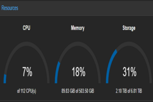
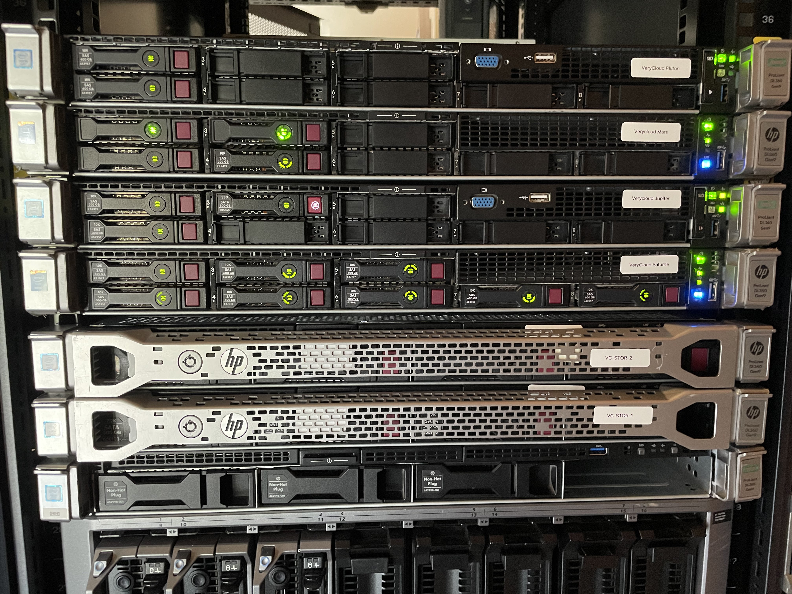

My Work with VPS Hosting
During my time at XYZ Hosting, I had the opportunity to work extensively with Virtual Private Servers (VPS). I'm excited to share some of the highlights of my work and how I prioritized security using Path.net.
Enhancing VPS Security with Path.net
One of the key aspects of my role was to ensure the security of our clients' VPS environments. To achieve this, I implemented a multi-layered security approach. One of the standout tools I utilized was Path.net, a robust security framework that helped in managing access control, encryption, and monitoring of server resources.
Photos from My Work

Setting up secure server rooms for optimal performance.

Implementing firewalls and intrusion detection systems.

Utilizing advanced monitoring tools to ensure uptime and performance.
These images showcase just a glimpse of the effort I put into ensuring top-notch security and performance for our clients' VPS environments. I'm proud of the work I accomplished during my tenure at XYZ Hosting, and I look forward to continuing to contribute to the field of server management and cybersecurity.